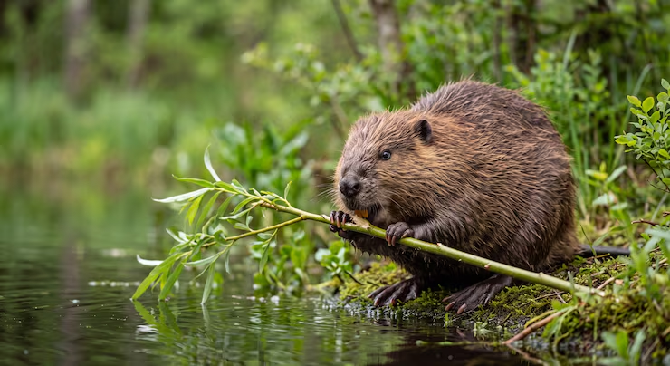

Кто такие бобры?
Бобры — это род млекопитающих из отряда грызунов, известные своей способностью строить плотины и хатки. Это эндемики Северного полушария, обитающие преимущественно в лесной зоне.
Бобры являются вторыми по величине грызунами в мире после капибары. Длина их тела может достигать 1 метра, а масса — до 30 кг.
Эти животные известны своим инженерным талантом: они перегрызают деревья, строят плотины и создают целые водоёмы, которые становятся домом для множества других видов.

Подробнее о жизни бобров можно узнать в видео по ссылке ниже:
▶ Смотреть видео о десанте бобров